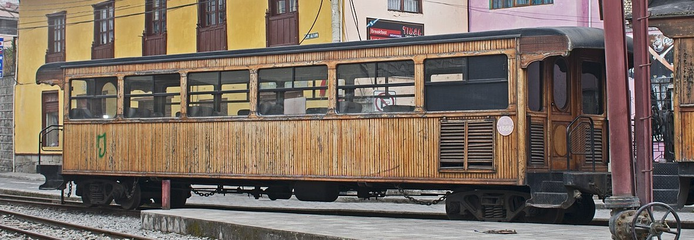
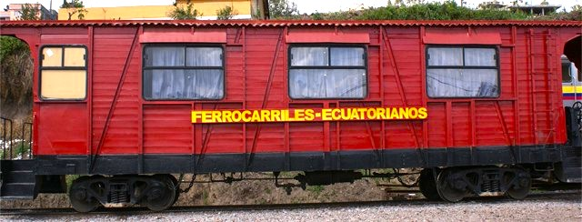
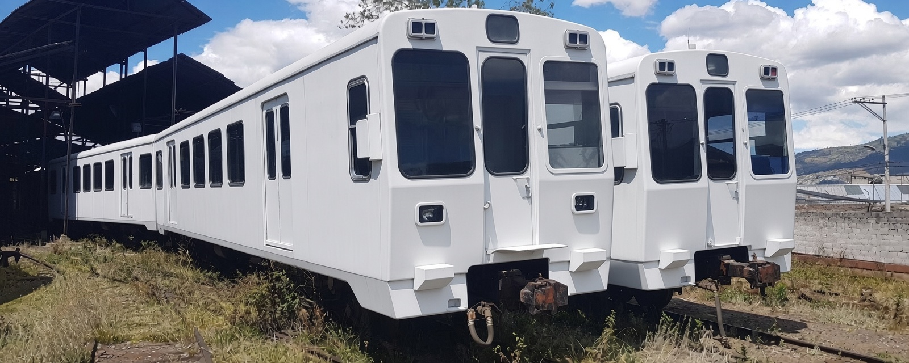

Últimas Fotografías


.jpg)
{kind=link}
{kind=link}
{kind=link}
{kind=link}
{kind=link}
{kind=link}
Colonial Metálicos serie 250

Última generación de coches de viajeros reconstruídos en Ecuador a partir de antiguos furgones cerrados EFE 1500,
son de caja metálica y bogies Bettendorf de dos ejes reutilizados, algunos cuentan con sistema de climatización en el techo.
-Están en servicio en el "Tren Nariz del Diablo"
| Numeración | Base Taller | Estado | Color | Año | Datos adicionales |
|---|---|---|---|---|---|
| 251 | Riobamba | Apartado | Rojo-negro | 2012 | Climatizado -Almacenado en Riobamba desde 2020. |
| 252 | Riobamba | En servicio | Rojo-amarillo | 2012 | Climatizado |
| 253 | Ibarra | En servicio | Rojo-negro | 2012 | Climatizado |
| 254 | Ibarra | En servicio | Rojo-negro | 2012 | Climatizado |
| 255 | Ibarra | En servicio | Rojo-negro | 2012 | No climatizado |
| 256 | Ibarra | En servicio | Rojo-negro | 2014 | No climatizado |
| 257 | Ibarra | En servicio | Rojo-negro | 2014 | No climatizado |
| 258 | Ibarra | En servicio | Rojo-negro | 2014 | No climatizado |
CUT 4

Antiguos remolques intermedios de unidades diésel 2400 de FEVE en España construidos entre 1983 y 1986 que fueron
convertidos en coches de viajeros en dicho país para el tren de lujo ''Costa Verde'' bajo la numeración 5400 en el año 2000
y utilizados hasta su baja en 2014, año en que fueron vendidos a FEEP de Ecuador.
Perdieron numeración española y los cuatro coches están clasificados juntos bajo el nombre de CUT 4.
| Numeración | Base Taller | Estado | Color | Año | Datos adicionales |
|---|---|---|---|---|---|
| 009 | ¿? | Apartado | Rojo-negro | 2000 | Apartado en Chimbacalle |
| 010 | ¿? | Apartado | Rojo-negro | 2000 | Apartado en Chimbacalle |
| 011 | ¿? | Apartado | Rojo-negro | 2000 | Apartado en Chimbacalle |
| 012 | ¿? | Apartado | Rojo-negro | 2000 | Apartado en Chimbacalle |
Colonial de Madera 14m

| Numeración | Base Taller | Estado | Color | Año | Datos adicionales |
|---|---|---|---|---|---|
| 1539 | ¿? | En servicio | Rojo-amarillo | 2006 | -Color café al construirse. -Descarriló en viaje inaugural de reactivación del tren en Quito ene-2009. -Color rojo-amarillo desde 2024. -Logo ''Primera clase'' |
| 1560 | ¿? | Apartado | Rojo-negro | 2000 | Apartado en Chimbacalle |
| 1566 | ¿? | En servicio | Rojo-negro | 2000 | En servicio en el "Tren Nariz del Diablo" |
| 1586 | ¿? | En servicio | Rojo-negro | 2000 | En servicio en el "Tren Nariz del Diablo" |
Colonial Madera 13m

Coches de viajeros con caja de madera sin climatización y bogies de dos ejes, con estética exterior original de los años 70 con la inscripción Ferrocarriles Ecuatorianos y algunos ''Primera clase'' en amarillo en el costado.
Actualmente todos los coches de este tipo en servicio circulan en el Tren Nariz del Diablo.
| Numeración | Base Taller | Estado | Color | Año | Datos adicionales |
|---|---|---|---|---|---|
| 001 | Riobamba | En servicio | Rojo-amarillo | 2006 | -Coche presidencial |
| 115 | - | En pedestal | Rojo-amarillo | ¿? | En el Malecón 2000 como puesto de venta de boletos desde ¿?. |
| 118 | - | Chatarreado | - | ¿? | - |
| 118 | - | Chatarreado | - | ¿? | Apartado en Chiriyacu en 2003 |
| 128 | - | Chatarreado | - | ¿? | - |
| 130 | - | Chatarreado | - | ¿? | - |
| 131 | - | Chatarreado | - | ¿? | - |
| 207 | Riobamba | En servicio | Rojo-amarillo | ¿? | Apartado en Chiriyacu en 2003 En servicio color café en 2010 Colores rojo-amarillo y logo "Primera clase" desde 2023. |
| 211 | - | Apartado | - | ¿? | En taller de Durán en 2003 Apartado sin bogies sobre una plataforma en la playa de vías de Durán 2018. |
| 212 | - | Chatarreado | - | ¿? | Llevó colores rojo-azul. años 90 Colores rojo-amarillo e inscripción "Expreso de turismo" Apartado en Riobamba en 2003 |
| 1430 | - | Chatarreado | - | ¿? | - |
| 1560 | Riobamba | En servicio | Rojo-amarillo | 2013 | Color café al construirse
Color rojo-amarillo desde 2024 |
| 1566 | Riobamba | En servicio | Rojo-amarillo | 2013 | - |
| 1586 | Riobamba | En servicio | Rojo-amarillo | 2013 | - |
Colonial Metálicos

Coches con caja metálica y bogies de dos ejes pero sin diseño unificado, cuentan con 30 plazas y sus dimensiones y peso varían.
| Numeración | Base Taller | Estado | Color | Año | Datos adicionales |
|---|---|---|---|---|---|
| 1580 | Riobamba | En servicio | Rojo | 2006 | Vagón reconstruído (ventanas centrales más pequeñas por antigua puerta corredera),
''Primera clase'' |
| 545 | - | Chatarreado | Rojo | ¿? | - |
| 577 | Ibarra | En servicio | Rojo | 1970 | - |
| 112 | - | Chatarreado | - | ¿? | - |
ENFE 1500 "Coches jaula"
Furgones cerrados de carga utilizados como coches de viajeros de tercera clase con asientos laterales en el interior, pero sin puertas, ventanas ni climatización. Algunos sí contaban con ventanas tras modificar la carrocería para quitar trozos de chapa o madera del lateral pero sin vidrios.
| Numeración | Base Taller | Estado | Color | Año | Datos adicionales |
|---|---|---|---|---|---|
| 1513 | - | ¿? | - | ¿? | - |
| 1580 | Riobamba | En servicio | Rojo-amarillo | 2006 | Reformado en 2006, cuenta con ventanas con vidrios y la puerta corredera central fue removida (ventanas centrales
más cortas por ese motivo). En ''Tren Nariz del Diablo'' |
Serie 3500

Unidades eléctricas de tres coches retiradas del Euskotren en España que quedaron como sobrante para desguace pero que fueron donadas a Tren Ecuador sin el coche motor y modifiicadas con el enganche tipo Alliance, actualmente están apartadas en composición Rc-R o sueltos en Chiriyacu y Riobamba.
Todas conservan interior original del Euskotren.
| Remolque con cabina | Remolque intermedio | Base Taller | Estado | Color | Año | Datos adicionales |
|---|---|---|---|---|---|---|
| 6501 | 5501 | - | Apartado | Blanco | 1977 | Apartado en Riobamba |
| 6503 | - | - | Apartado | Blanco | 1977 | Apartado en Riobamba |
| - | 5503 | - | Apartado | Blanco | 1977 | Apartado en Chiriyacu |
| 6505 | 5505 | - | Apartado | Blanco | 1977 | Apartado en Riobamba |
| 6507 | - | - | Apartado | Blanco | 1977 | Apartado en Chiriyacu |
| - | 5507 | - | Apartado | Blanco | 1977 | Apartado en Riobamba |
| 6508 | - | - | Apartado | Blanco | 1977 | Apartado en Riobamba |
| - | 5508 | - | Apartado | Blanco | 1977 | Apartado en Chiriyacu |
| 6509 | - | - | Apartado | Blanco | 1977 | Apartado en Riobamba |
| - | 5509 | - | Apartado | Blanco | 1977 | Apartado en Chiriyacu |
| 6510 | 5510 | - | Apartado | Blanco | 1977 | Apartado en Riobamba |
| 6513 | - | - | Apartado | Blanco | 1977 | Apartado en Chiriyacu |
| - | 5513 | - | Reformado | - | 1977 | Reformados en España por CINTRATEC antes de viajar a Ecuador, renumerado 0013 |
| 6514 | 5514 | - | Reformado | - | 1977 | Reformados en España por CINTRATEC antes de viajar a Ecuador, renumerados 0014 y 0015 |
| 6515 | 5515 | - | Reformado | - | 1977 | Reformados en España por CINTRATEC antes de viajar a Ecuador, renumerados 0016 y ¿? |
Furgones generador
Vehículo ferroviario destinado a generar electricidad para alimentar los servicios auxiliares del tren (climatización, alumbrado, tomas de corriente) mediante un motor diésel conectado a los coches de viajeros.
Fueron construídos en 2011 y 2014 en España específicamente para el Tren Crucero al no poder suministrar energía directamente al tren las locomotoras Alsthom serie 2400 en ciertos tramos muy exigentes. Los dos primeros son antiguos furgones cerrados de la FEVE reformados y el tercero un antiguo coche motor de una unidad 3500 de Euskotren.
| Remolque con cabina | Fabricante | Base Taller | Estado | Color | Año | Datos adicionales |
|---|---|---|---|---|---|---|
| JJag0.0026a | CINTRATEC | Durán | Apartado | Rojo-negro | 2011 | Almacenado en Durán desde 2020. |
| JJag0.0028a | CINTRATEC | Chiriyacu | Apartado | Rojo-amarillo | 2011 | Almacenado en Chimbacalle desde 2020 |
| JJag0.0030a | CINTRATEC | Durán | Apartado | Rojo-negro | 2014 | Almacenado en Durán desde 2020. |